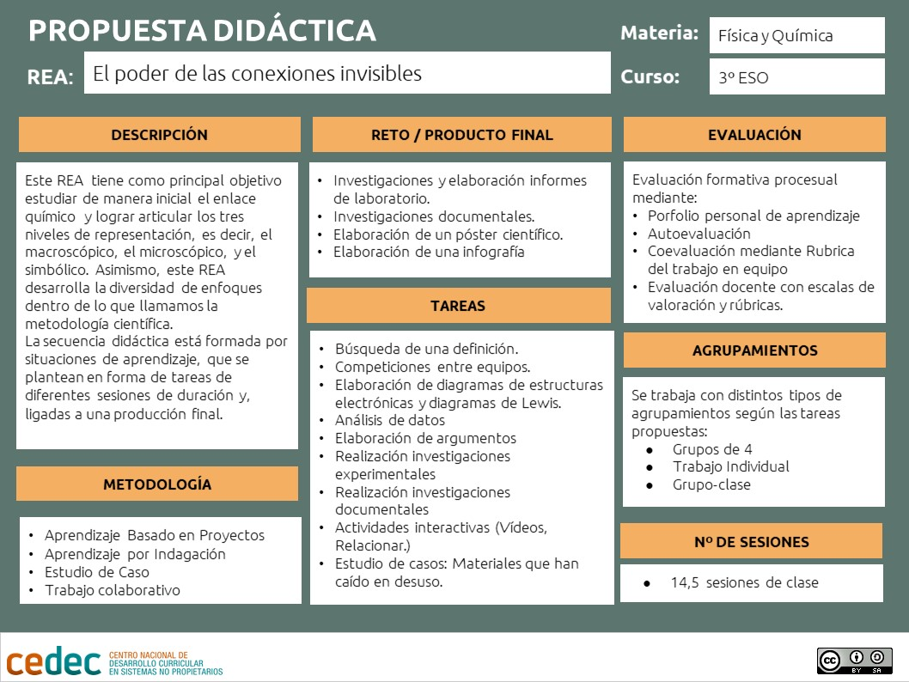
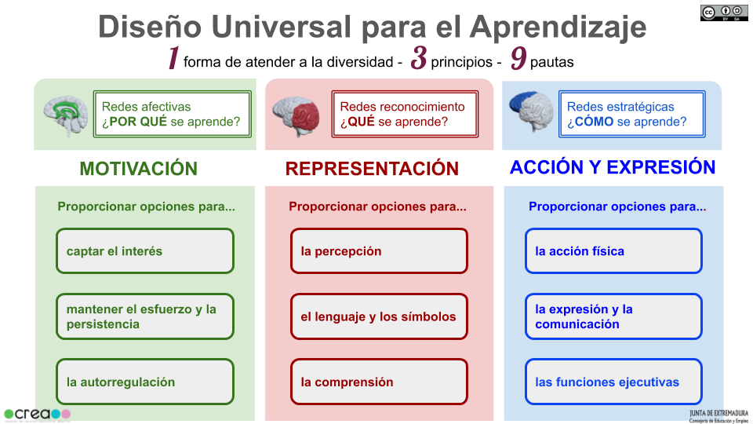

Propuesta didáctica
El REA "El poder de las conexiones invisibles" es una propuesta didáctica para la materia de Física y Química de 3º de ESO que presenta una situación de aprendizaje para trabajar los saberes básicos relacionados con los bloques A, las destrezas científicas básicas y B. la materia.
Esta situación de aprendizaje tiene como referencias metodológicas, principalmente, el aprendizaje basado en proyectos y el aprendizaje cooperativo, desde una perspectiva basada en el “Inquiry Based Learning (IBL)”, que consiste en impulsar el aprendizaje del estudiante a través de su propio proceso de investigación ante las cuestiones planteadas en el aula. Los estudiantes tienen la oportunidad de resolver problemas del mundo real. Este proceso mejora su capacidad de abordar los desafíos de manera lógica y desarrollar estrategias para superarlos. Existen varios tipos de enseñanza y aprendizaje basados en la investigación con diferentes estructuras según el contexto de aprendizaje:
- Actividades en las que se presenta un tema específico y luego se realizan preguntas para guiar a los estudiantes a través de una actividad con el conocimiento adquirido. Este método ayuda a los estudiantes a aprender a seguir procesos y a recopilar y registrar datos con precisión.
- Investigación estructurada donde se plantea la pregunta principal y el procedimiento a seguir. Luego, los estudiantes sacan conclusiones y generan explicaciones para sus descubrimientos mediante el análisis y la evaluación de los datos recopilados.
- Investigación guiada donde se plantea a los estudiantes una pregunta de investigación. Los estudiantes deben diseñar sus propios procedimientos para poner a prueba y comunicar sus hallazgos.
El IBL promueve el trabajo en equipo y la interacción a la hora de resolver problemas. De igual forma, promueve el pensamiento crítico, fomentando habilidades de pensamiento de orden superior esenciales para el éxito en el siglo XXI (como, por ejemplo, argumentación, análisis, solución de problemas, evaluación).
Se tratan, por tanto, de metodologías activas, que desarrollan competencias y cumplen los principios del D.U.A, ya que emplean recursos variados, suponen un estímulo y un desafío para el estudiante, le implican en el trabajo en equipo y en la resolución de situaciones significativas, que se presentan por medio de tareas guiadas y dirigidas a una producción final global.

Descargar la propuesta didáctica en formato editable o en pdf
Las tareas, proponen al alumnado retos variados combinando la investigación en la red, el trabajo de investigación científica, las lecturas, el trabajo con vídeos, la elaboración de pósteres científicos, de informes de laboratorio, infografías, etc. Se mantienen las estructuras de situación de aprendizaje, ya que están dirigidas a una producción final evaluable, ponen en contexto los contenidos curriculares y son competenciales.
Como en todos los REA del proyecto EDIA, la propuesta didáctica responde a una "estructuración granular", es decir, hace referencia a que la estructura del recurso depende de los objetivos de aprendizaje que se proponga cada docente, de manera que, aunque está organizada de un forma determinada, abarcando las competencias y todos los saberes básicos del tema, las diferentes tareas pueden ser reorganizadas y replanteadas por el profesorado. Así, éste tiene la posibilidad de usarlas como fuentes de inspiración o combinarlas con otras actividades que se adecúen mejor a su aula, a su programación o su tiempo lectivo. Esta "reusabilidad didáctica" repercute directamente en que el profesorado pueda utilizar los REA más fácilmente.
Indicar también que podemos conectar algunas tareas con otras materias STEAM, como biología y geología (enlaces químicos, cristales, etc), matemáticas (unidades de medida, escalas, proporcionalidad, ..), tecnología, informática (empleo de aplicaciones web, ...) para su posible inclusión en un itinerario interdisciplinar.
Del mismo, modo esta propuesta es muy adecuada para llevarla a cabo en un "aula del futuro" por las características de sus distintas tareas: búsqueda y producción de información, comunicación, experimentación, etc.
Se emplean estrategias metodológicas que desarrollan competencias y acordes a los principios del DUA, tales como:
- Planteamiento de una situación didáctica, en forma de prueba o reto, que despierta el interés del alumnado.
- Desarrollo de las tareas mediante investigaciones con actividades “episódicas”, de corta duración, variadas (trabajo en el laboratorio, simulaciones digitales, vídeos, juegos, lecturas, manualidades…), y adaptadas a nivel del alumnado.
- Se promueve el aprendizaje experiencial y la implicación de diversas formas.
- Las tareas están siempre guiadas mediante cronogramas, andamiajes, ejemplos, glosarios, tutoriales, plantillas de planificación y resúmenes que facilitan la comprensión.
- Hay un feedback continuo, por medio de conexiones entre contenidos y actividades de autorregulación del aprendizaje (diarios).
- Se promueve el aprendizaje cooperativo, creando un clima de confianza basado en el trabajo en equipo.
- Los productos finales se realizan en formatos variados (informes, comunicaciones orales, pósteres…).
- Se promueve la evaluación formativa, por medio de actividades de coevaluación y con diarios de aprendizaje, donde el alumno y alumna puede conocer el nivel en que se encuentra y avanzar a diferentes ritmos.

Referencias curriculares
Mediante este REA se desarrollan las competencias específicas y saberes básicos descritos en el Real Decreto 217/2022, de 29 de marzo, por el que se establece la ordenación y las enseñanzas mínimas de la Educación Secundaria Obligatoria, desarrollado luego por cada Comunidad en sus correspondientes decretos autonómicos.
Competencias clave
- Competencia en comunicación lingüística (CCL)
- Competencia plurilingüe (CP)
- Competencia matemática, ciencia, tecnología, ingeniería (STEM)
- Competencia digital (CD)
- Competencia personal, social y de aprender a aprender (CPSAA)
- Competencia ciudadana (CC)
- Competencia emprendedora (CE)
- Competencia en conciencia y expresiones culturales (CCEC)
Competencias específicas y criterios de evaluación
| Competencia específica 1: Comprender y relacionar los motivos por los que ocurren los principales fenómenos fisicoquímicos del entorno, explicándolos en términos de las leyes y teorías científicas adecuadas, para resolver problemas con el fin de aplicarlos para mejorar la realidad cercana y la calidad de vida humana. |
|
|
Criterios de evaluación |
|
|
Competencia específica 2: Expresar las observaciones realizadas por el alumnado en forma de preguntas, formulando hipótesis para explicarlas y demostrando dichas hipótesis a través de la experimentación científica, la indagación y la búsqueda de evidencias, para desarrollar los razonamientos propios del pensamiento científico y mejorar las destrezas en el uso de las metodologías científicas. |
|
|
Criterios de evaluación 2.1 Emplear las metodologías propias de la ciencia en la identificación y descripción de fenómenos a partir de cuestiones a las que se pueda dar respuesta a través de la indagación, la deducción, el trabajo experimental y el razonamiento lógico-matemático, diferenciándolas de aquellas pseudocientíficas que no admiten comprobación experimental.2.2 Seleccionar, de acuerdo con la naturaleza de las cuestiones que se traten, la mejor manera de comprobar o refutar las hipótesis formuladas, diseñando estrategias de indagación y búsqueda de evidencias que permitan obtener conclusiones y respuestas ajustadas a la naturaleza de la pregunta formulada. 2.3 Aplicar las leyes y teorías científicas conocidas al formular cuestiones e hipótesis, siendo coherente con el conocimiento científico existente y diseñando los procedimientos experimentales o deductivos necesarios para resolverlas o comprobarlas. . |
|
|
Competencia específica 3: Manejar con soltura las reglas y normas básicas de la física y la química en lo referente al lenguaje de la IUPAC, al lenguaje matemático, al empleo de unidades de medida correctas, al uso seguro del laboratorio y a la interpretación y producción de datos e información en diferentes formatos y fuentes, para reconocer el carácter universal y transversal del lenguaje científico y la necesidad de una comunicación fiable en investigación y ciencia entre diferentes países y culturas. |
|
|
Criterios de evaluación 3.1 Emplear datos en diferentes formatos para interpretar y comunicar información relativa a un proceso fisicoquímico concreto, relacionando entre sí lo que cada uno de ellos contiene, y extrayendo en cada caso lo más relevante para la resolución de un problema. 3.3 Poner en práctica las normas de uso de los espacios específicos de la ciencia, como el laboratorio de física y química, asegurando la salud propia y colectiva, la conservación sostenible del medio ambiente y el cuidado de las instalaciones. |
|
|
Competencia específica 4: Utilizar de forma crítica, eficiente y segura plataformas digitales y recursos variados, tanto para el trabajo individual como en equipo, para fomentar la creatividad, el desarrollo personal y el aprendizaje individual y social, mediante la consulta de información, la creación de materiales y la comunicación efectiva en los diferentes entornos de aprendizaje. |
|
|
Criterios de evaluación 4.1 Utilizar recursos variados, tradicionales y digitales, mejorando el aprendizaje autónomo y la interacción con otros miembros de la comunidad educativa, con respeto hacia docentes y estudiantes y analizando críticamente las aportaciones de cada participante. |
|
|
Competencia específica 5: Utilizar las estrategias propias del trabajo colaborativo, potenciando el crecimiento entre iguales como base emprendedora de una comunidad científica crítica, ética y eficiente, para comprender la importancia de la ciencia en la mejora de la sociedad, las aplicaciones y repercusiones de los avances científicos, la preservación de la salud y la conservación sostenible del medio ambiente. |
|
|
Criterios de evaluación 5.1 Establecer interacciones constructivas y coeducativas, emprendiendo actividades de cooperación como forma de construir un medio de trabajo eficiente en la ciencia. |
|
|
Competencia específica 6: Comprender y valorar la ciencia como una construcción colectiva en continuo cambio y evolución, en la que no solo participan las personas dedicadas a ella, sino que también requiere de una interacción con el resto de la sociedad, para obtener resultados que repercutan en el avance tecnológico, económico, ambiental y social. |
|
|
Criterios de evaluación 6.1 Reconocer y valorar, a través del análisis histórico de los avances científicos logrados por hombres y mujeres de ciencia, que la ciencia es un proceso en permanente construcción y que existen repercusiones mutuas de la ciencia actual con la tecnología, la sociedad y el medio ambiente.6.2 Detectar en el entorno las necesidades tecnológicas, ambientales, económicas y sociales más importantes que demanda la sociedad, entendiendo la capacidad de la ciencia para darles solución sostenible a través de la implicación de todos los ciudadanos. |
|
Saberes básicos
Se trabajan los saberes básicos (conocimientos, destrezas y actitudes básicas) de los siguientes bloques de la materia de Física y Química de 3º de ESO:
A. Las destrezas científicas básicas.
- Metodologías de la investigación científica: identificación y formulación de cuestiones, elaboración de hipótesis y comprobación experimental de las mismas.
- Trabajo experimental y proyectos de investigación: estrategias en la resolución de problemas y en el desarrollo de investigaciones mediante la indagación, la deducción, la búsqueda de evidencias y el razonamiento lógico-matemático, haciendo inferencias válidas de las observaciones y obteniendo conclusiones.
- Diversos entornos y recursos de aprendizaje científico como el laboratorio o los entornos virtuales: materiales, sustancias y herramientas tecnológicas.
- Normas de uso de cada espacio, asegurando y protegiendo así la salud propia y comunitaria, la seguridad en las redes y el respeto hacia el medio ambiente.
- El lenguaje científico: unidades del Sistema Internacional y sus símbolos. Herramientas matemáticas básicas en diferentes escenarios científicos y de aprendizaje.
- Estrategias de interpretación y producción de información científica utilizando diferentes formatos y diferentes medios: desarrollo del criterio propio basado en lo que el pensamiento científico aporta a la mejora de la sociedad para hacerla más justa, equitativa e igualitaria.
- Valoración de la cultura científica y del papel de científicos y científicas en los principales hitos históricos y actuales de la física y la química en el avance y la mejora de la sociedad.
B. La materia.
- Principales compuestos químicos: su formación, y sus propiedades físicas y químicas, valoración de sus aplicaciones.
Itinerario
En la siguiente tabla se muestra el itinerario didáctico del REA:
| TAREAS | OBJETIVOS | SESIONES |
| Itinerario de aprendizaje |
El objetivo de esta tarea preliminar es la presentación del itinerario de aprendizaje que se va a seguir durante todo el proyecto. El o la docente explicará las tareas a realizar y cómo se valorarán, poniendo a disposición del alumnado los instrumentos de evaluación. También se formarán en esta etapa los equipos cooperativos base con sus normas de funcionamiento. |
1/2 sesión |
|
El momento de la unión |
Bajo este epígrafe se presentan diferentes tareas con sus respectivas actividades.
|
8,5 sesiones |
| ¡Exploradores de lo invisible! |
Realizamos una investigación experimental sobre las propiedades de diferentes sustancias según el tipo de enlace químico que poseen. Se presentan los resultados en un informe escrito. |
2,5 sesiones |
| Misión científica: Descifrando la sal | En esta tarea se realiza una investigación experimental sobre la relación salinidad y conductividad, respondiendo a la siguiente pregunta de investigación: ¿Cómo afecta la disolución de sal en el agua a la velocidad de las cargas que se mueven a través de ella? Se presentan los resultados en un informe escrito. |
1,5 sesiones |
| La ciencia de los enlaces |
Diseñamos una infografía con la que podríamos explicar lo que hemos aprendido sobre los enlaces químicos a nuestros compañeros y compañeras de un curso inferior y que nunca han oído hablar de ellos. Además se realza la evaluación final del porfolio, la coevaluación, autoevalución, etc. |
1,5 sesiones |
TOTAL DE SESIONES: 14,5
Como se ha indicado, esta situación de aprendizaje es una propuesta didáctica para la materia de Física y Química de 3º de ESO que aborda los saberes básicos curriculares de los bloques A, las destrezas científicas básicas y B, la materia. Se emplean metodologías activas que desarrollan competencias, como el aprendizaje basado en proyectos, el aprendizaje cooperativo y el basado en la indagación.
El enlace químico es una de las ideas principales de la ciencia, considerado crucial dentro de la química. Por ello, se necesita un adecuado conocimiento de la estructura de la materia y del enlace químico para desarrollar con éxito otras partes de la química o incluso de la biología. Ahora bien, aunque en 3º curso de ESO se trata solo de una iniciación que se profundizará más adelante en cuarto curso de ESO y en Bachillerato, es esencial conseguir un aprendizaje significativo por parte de los estudiantes de la idea del enlace químico.
Para el alumnado de 3 de ESO es muy difícil alternar el enfoque macroscópico con el enfoque submicroscópico necesario para el estudio del enlace químico, la elaboración de un modelo para el mismo y la justificación de las propiedades físicas desde la perspectiva de la unión entre los átomos. Todo ello implica una serie de dificultades asociadas al nivel de desarrollo cognitivo en que se encuentra el alumnado de estas edades entre 15 y 16 años. Por ello las diferentes tareas y actividades que se presentan son variadas y van dirigidas a una comprensión signifucativa de la idea de enlace químico. Se potencia el trabajo en equipo y en la resolución de situaciones significativas. Se ha procurado que sean variadas: investigaciones experimentales, documentales, vídeos, lecturas, etc. Pero esto no excluye en absoluto el aprendizaje individual, ya que cada alumno y alumna tiene que disponer de un porfolio, donde, además de colocar los resultados comunes del trabajo en equipo, pueda también hacer aportaciones, ampliaciones y reflexiones de modo personal sobre su proceso de aprendizaje.
Este porfolio puede ser un cuaderno en papel o digital, dependiendo de las posibilidades del centro educativo, pero es mucho más interesante que sea lo segundo, ya que se proponen muchas actividades digitales y, además, es de más fácil acceso al profesor o profesora para poder hacer sugerencias de mejora y asignar las puntuaciones tanto a los trabajos de equipo como a los individuales. Si se opta por el formato cuaderno, en aquellas tareas que proponen investigar en la Web, o trabajar con un vídeo interactivo, se puede trabajar con un equipo web por cada grupo, bien un portátil o una tablet.
La estructura de la propuesta didáctica debe exponerse al alumnado al principio así como darle unas instrucciones precisas que se incluyen en el apartado "Itinerario de aprendizaje". Del mismo modo se informará sobre cómo se va a realizar la evaluación, que se explica con más detalle en el siguiente apartado de esta guía.
Hay material para 14,5 sesiones de clase. Como se ha indicado, la finalidad de este trabajo es ofrecer ideas y dejar a la libre elección del docente su aplicación en el aula y que la pueda utilizar con total flexibilidad, adaptándola a sus objetivos de aprendizaje y su situación de aula.
Evaluación
A lo largo de todo el proceso se realiza una evaluación formativa y formadora que nos permite recoger, tanto al alumnado como al profesorado, información del proceso de enseñanza y aprendizaje y modificar, incorporar o reorganizar las pruebas y el tiempo lectivo para poder atender a las necesidades del alumnado. De la misma forma, el propio alumno/a puede autoevaluarse, reflexionar sobre su aprendizaje y ofrecer o solicitar ayuda entre iguales, incorporando así elementos metacognitivos en su evaluación para hacerse consciente de sus logros y dificultades.
Se valora tanto el trabajo en grupo como el individual a través de los distintos documentos del porfolio personal del alumno/a, que se nutre de lo trabajado en equipo y de aportaciones extras que pueda realizar. En este sentido son también importantes las observaciones in situ que pueda hacer el docente mientras se desarrolla el trabajo en equipo. También se propone una evaluación del funcionamiento del equipo y una autoevaluación.
Como es una propuesta modificable, el profesorado, una vez elegido el itinerario que va a emplear, puede integrarla en otra más amplia, donde también tendrán cabida otras pruebas de evaluación u otros trabajos o producciones que puedan realizarse durante la secuencia didáctica.
La propuesta evaluativa evalúa competencias educativas y cumple con todos los criterios de evaluación curriculares de los bloques de destrezas científicas y la materia.
Los instrumentos de evaluación que se proponen se emplean para:
- Evaluaciones docentes
- Autoevaluación del propio alumnado
- Valoración externa
- Coevaluación entre grupos de alumnos/as
- Autoreflexión del aprendizaje
Y son los siguientes:
- Escala de valoración del porfolio
- Escala de Autoevaluación del propio trabajo
- Escala de valoración de un póster científico
- Escala de valoración del trabajo en el laboratorio
- Escala de valoración de un trabajo de investigación científica
- Escala de valoración de un informe escrito científico
- Escala de valoración de diseño de una infografía
- Rúbrica de co-evaluación del trabajo en equipo.
- Diario de aprendizaje.